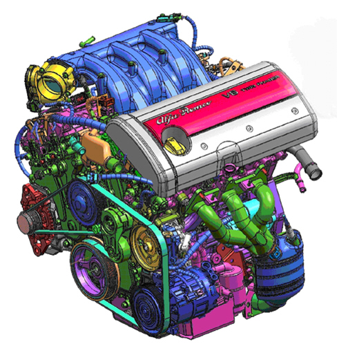
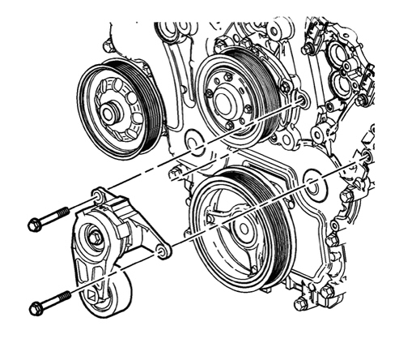

INTRODUCTION - VARIOUS ENGINE COMPONENTS DRIVE
- Path
- Descriptions > 10 ENGINE > 1092 ENGINE COMPONENT MISCELLANEOUS DRIVES > INTRODUCTION - VARIOUS ENGINE COMPONENTS DRIVE
- Kind
- system description
- Applies to
- engines: 3.2 JTS; all production periods
- Interactive page
- https://sloeber94.github.io/elrnDB-aBrrSpdr/en/#/946001207
Applies to: engines: 3.2 JTS; all production periods
Services drive belt

The services belt transmits the power coming from the crankshaft pulley (torsional damper) to the driven pullies for the compressor for the climate control system, the power assisted steering pump, the water pump and the alternator. The belt is tensioned by means of an automatic tensioner.
